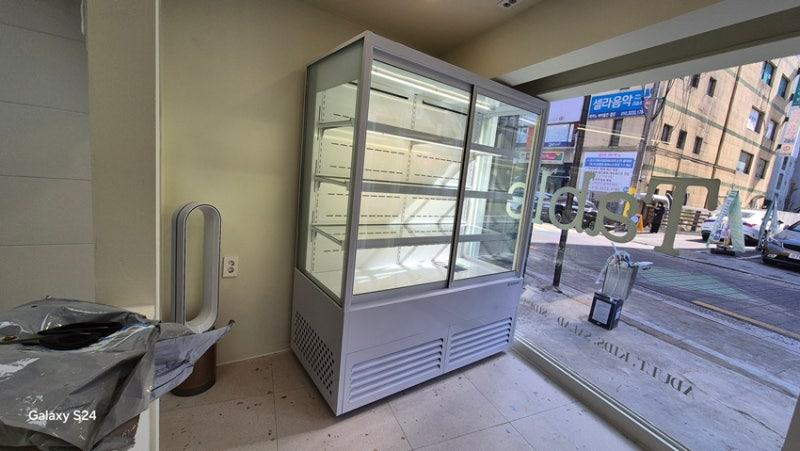
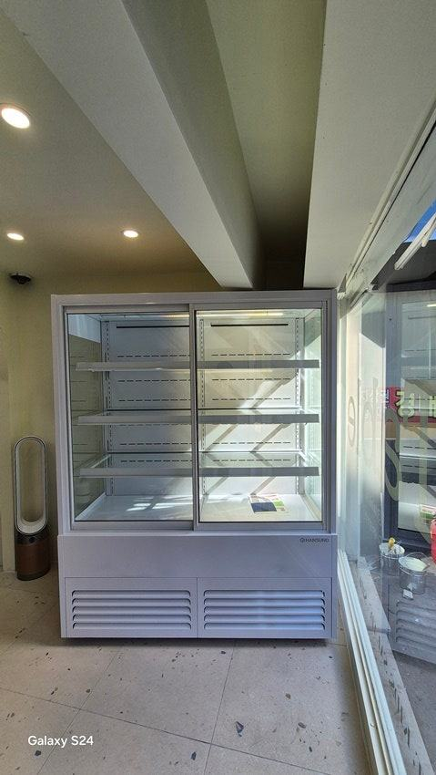
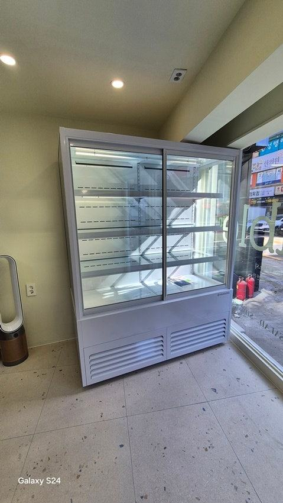
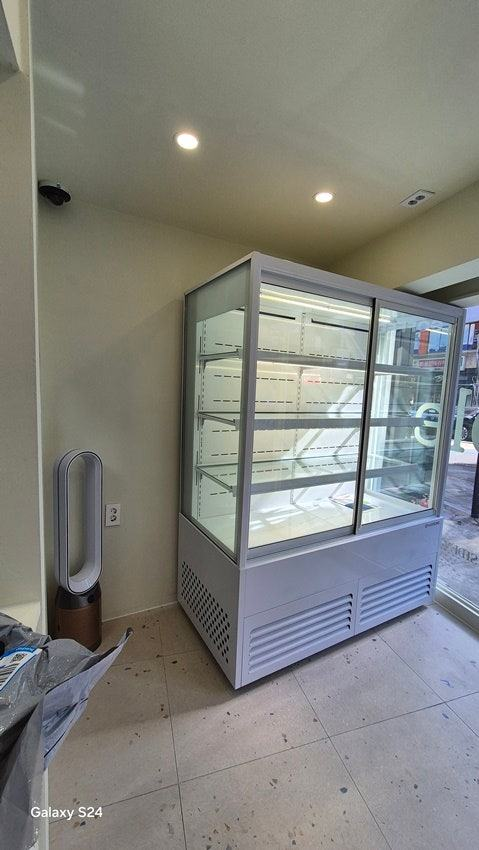
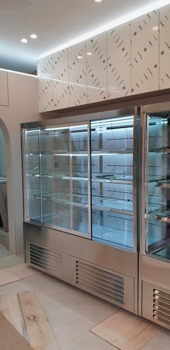
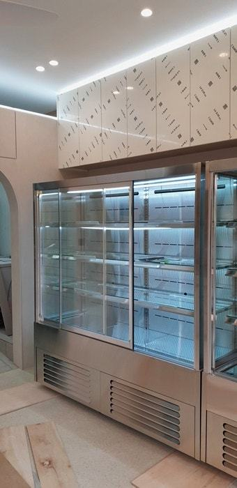

반찬(진열)쇼케이스
반찬가게 오픈 체크리스트, 반찬쇼케이스 설비 점검 순서

반찬가게 오픈 전 설비 점검은 반찬쇼케이스 설치 자리의 열 배출, 전용 전원, 반찬 용기와 진열량, 첫 가동 후 온도 확인, 기계실 청소 일정 순서로 보시면 됩니다. 오픈 하루 전이 아니라 며칠 앞서 가동해 두어야 문제가 생겨도 대응할 시간이 있습니다.
안녕하세요. 반찬가게 진열장을 매장에 맞춰 설계하고 설치하는 한성쇼케이스입니다.
반찬가게 오픈을 앞두면 메뉴 준비, 포장재, 간판, 홍보까지 챙길 게 끝이 없습니다. 그러다 보니 반찬쇼케이스는 설치만 끝나면 된다고 생각하고 넘어가시는 경우가 많죠.
하지만 오픈 첫날 진열장 온도가 안 잡히거나, 차단기가 내려가거나, 용기가 선반에 안 맞아 진열이 엉키면 준비한 반찬을 제대로 보여 주지도 못합니다.
첫인상이 중요한 오픈 주간에 이런 일이 생기면 회복이 쉽지 않습니다.
오늘은 반찬가게 오픈 체크리스트 중 반찬쇼케이스와 냉장 설비에 해당하는 부분만 순서대로 정리해 드리겠습니다.
1. 설치 자리와 열 배출
반찬쇼케이스는 빌트인 냉장고와 달리 기계실 열을 매장 쪽으로 내보내는 구조가 많습니다. 열이 빠질 곳이 막혀 있으면 기계실이 과열돼 냉기가 약해지고 고장으로 이어집니다.
인테리어 마감 전에 쇼케이스 주변에 통풍 공간이 남아 있는지 확인하세요.
조리실 가스레인지나 오븐과 진열장이 너무 가깝지 않은지도 함께 보셔야 합니다. 조리 열기가 진열장 쪽으로 흘러들면 오픈 첫 여름부터 고생하게 됩니다.
- 기계실 쪽 통풍 공간이 막히지 않았는지 보세요.
- 조리 열원과 진열장 사이 거리를 확인하세요.
2. 전원과 차단기
반찬가게는 냉장고, 냉동고, 쇼케이스, 밥솥, 전자레인지, 포장 기계가 한꺼번에 돌아갑니다. 진열장을 다른 장비와 같은 회로에 물리면 피크 시간에 차단기가 떨어질 수 있습니다.
진열장 전용 콘센트를 따로 빼 두셨는지 전기 업체에 확인하세요.
멀티탭에 진열장을 꽂아 쓰는 것도 피해 주세요. 하루 종일 도는 장비라 접촉 불량이 생기면 밤새 꺼져 있다가 아침에 발견하는 일이 생깁니다.


3. 용기와 진열량
진열장 내부는 반찬 국물과 양념 때문에 부식되기 쉬운 환경입니다. 반찬은 반드시 뚜껑이나 랩을 쓸 수 있는 전용 용기에 담아 진열하세요.
오픈 전에 실제 용기를 선반에 놓아 보고 단 높이와 깊이가 맞는지 확인해야 오픈 날 진열이 엉키지 않습니다.
오픈 날에는 보여 주고 싶은 마음에 반찬을 가득 채우기 쉽습니다. 너무 많이 넣으면 냉기가 돌지 않아 온도가 제대로 유지되지 않으니, 용기 사이에 틈을 남기고 적정량만 진열하세요.
- 실제 용기로 단 높이와 깊이를 맞춰 보세요.
- 오픈 날 진열량을 미리 정해 두세요.
4. 첫 가동과 온도 확인
설치를 마치면 오픈 며칠 전부터 진열장을 비운 채 가동해 두세요. 설정 온도까지 내려가는 데 걸리는 시간, 칸마다 온도 차, 유리에 김이 서리는지를 확인하고, 조명이 모두 켜지는지도 봐야 합니다.
이 기간에 이상이 보이면 오픈 전에 손볼 수 있습니다. 온도계를 칸마다 하나씩 두고 아침저녁으로 기록해 두면 이후 관리 기준이 됩니다.
5. 청소 일정 정해 두기
기계실 응축기에 먼지가 쌓이면 열이 빠지지 못해 과열과 고장으로 이어집니다. 3개월에 한 번은 기계실을 청소하도록 오픈 때 달력에 표시해 두세요.
매일 마감 때는 유리와 패킹에 묻은 양념을 닦는 일을 직원 마감 목록에 넣어 두시면 좋습니다.
체크리스트
- 기계실 통풍 공간과 조리 열원 거리
- 진열장 전용 콘센트와 회로
- 실제 반찬 용기로 단 높이 확인
- 오픈 며칠 전 빈 상태 가동과 온도 기록
- 기계실 청소 일정과 마감 청소 목록
현장에서 자주 보는 경우: 설치 환경과 기계실 청소를 놓친 반찬가게
반찬가게쇼케이스 고장 상담을 받아 보면 원인이 설치 환경에 있는 경우가 많습니다. 일반 빌트인 냉장고처럼 벽이나 가구 사이에 꽉 끼워 설치해 열 배출이 막혀 있거나, 기계실을 오랫동안 청소하지 않아 응축기에 먼지가 두껍게 쌓여 과열된 경우입니다.
그래서 열이 원활하게 빠지는 자리에 설치하고, 3개월에 한 번은 기계실을 청소하시라고 안내해 드립니다.
반찬은 올바른 용기에 담아 내부 부식을 막고, 적정량만 넣어 온도가 제대로 유지되도록 하는 것도 함께 말씀드리는 기본 관리입니다.





자주 묻는 질문
반찬쇼케이스는 오픈 며칠 전에 설치해야 하나요?
인테리어 공정에 따라 다르지만, 오픈 전에 빈 상태로 가동해 온도를 확인할 수 있도록 여유를 두고 설치하시길 권합니다.
오픈 일정이 정해지면 상담 때 먼저 말씀해 주세요.
기계실 청소는 직접 해도 되나요?
전원을 끄고 응축기 겉의 먼지를 솔로 털어 내는 정도는 직접 하셔도 됩니다. 먼지가 굳어 있거나 분해가 필요하면 점검을 요청하세요.
오픈 직후 고장이 나면 어떻게 하나요?
대표전화 031-986-2458로 접수하시면 됩니다. 한성쇼케이스는 전국 240여 개 A/S 센터를 운영하고 있어 가까운 센터에서 대응합니다.
매장 조건에 맞춰 만드는 한성쇼케이스
원하시는 제품 사진과 설치할 공간 사진만 보내 주셔도 매장에 맞는 구성을 추천해 드립니다.
- 전국 240여 개 A/S 전담 센터 운영
- 본사 대량 자재 매입으로 품질 대비 합리적인 가격
- 유럽제·삼성 냉각 콤프레셔 적용
- 국내 최초 쇼케이스 전문 디자이너 상주
매장 폭과 원하는 진열 구성을 알려 주세요. 실측과 견적을 안내해 드립니다.
031-986-2458